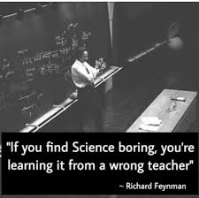

Teaching duties and Students Advised
- 
We can always improve our teaching: Recently received the following email from one of the students following my course at the UZH: "Dear Sebastiano Thank you for the mail [...] I really appreciate that you were so supportive during my project ... I am super happy with the result, as it is actually a working system that I can use even outside of the mostly virtual space of a typical UZH project. ...." I personally like to teach and I hope to receive more and more emails like this one by students following my courses, as they motivate me to do better in the future. I want to thank all of the students that I had the opportunity to teach and that collaborated with me on research projects. I will do my best, to improve my teaching and communication skills and attract more students on topics related to software engineering and cloud computing.
Favourite Quotes:
- It is never wrong to do the right thing.. (Mark Twain)
- Nothing truly valuable arises from ambition or from a mere sense of duty; it stems rather from love and devotion towards men and towards objective things.. (Albert Einstein)
- I never teach my pupils. I only attempt to provide the conditions in which they can learn. (Albert Einstein)
- You cannot teach a man anything; you can only help him find it within himself. (Galileo Galilei)
A few things I apply to my life, I think they will evolve and change, but hopefully, there will be useful to you (referring to young researchers):
1) We have got to have a vision for our personal and professional development (e.g., to get there, try to know your target audience and reach the people you like or want to work with). Without a vision, we risk to be drifted around and end up nowhere. 2) Ignore the “naysayers”: There will be always people telling us that we are not good, that what we are trying to do is impossible”. Without constructive feedback, we should ignore them, they do not know who we are and what we can achieve. We got to believe that our vision “is possible” 3) Embrace Failures: Do not be worried about failures, all people fail, embrace failures. Fail and get up, fail and get up. Keep looking and visualize your vision. 4) There is no plan B: Hearing “naysayers” or be worried about failures makes us sort of “frozen”, we can’t do things properly if we are frozen by our concerns. Then, we often try to think about an alternative plan, I call it “plan B”, which is usually far from our original vision. This is ok if our vision was just far away from what we really want to be or what we really are. However, when we think about a plan B we tend to move all our positive energy from our vision, I call it plan A. We do it because we consider the plan B as “a safety net”: if things get bad, there will be an alternative plan (a safety net). We actually work/achieve more if we act like we do not have a safety net (we are not afraid). 5) Happiness is not a function of what you achieve: “It's a function of how you spend your time. Success is a temporary thrill. Happiness lies in doing daily activities that bring you joy. There's always a new mountain to climb. You don't have to anchor your emotions to the summit” (Adam Grant)
Teaching ExperienceUniversity of Bern, Switzerland
• Software Engineering Course - Topic "DevOps and testing AI-based cyber-physical systems" - 2022 and 2023.
Zurich University of Applied Science, Switzerland
• DevOps Testing for Complex Systems - 2023.
• Cloud Computing course - CCP2 2020.
• INF-Prog1 2020.
• Co-lecturer for the CAS Information Engineering in 2020, 2019, 2018.
• Lab Instructor for the Programming course in Java, in 2018.
University of Zurich, Switzerland
Lecturer for the Software Maintenance and Evolution course - 2022, 2021, 2020, 2019, 2018, 2017, 2016, 2015.
University of Sannio, Italy
Lab Instructor (December 2013) for the Programming Techniques course of Professor Gerardo Canfora:
• The Languages and Grammars
• JavaCC parser University of Sannio, Italy
Seminaries:
Seminaries in the Software Engineering course of Prof. Massimiliano Di Penta:
• Recovering Traceability Links via Information Retrieval Methods
Seminaries at the Ecole Polytechnique de Montreal:
• Who is going to Mentor Newcomers in Open Source Projects?
• Mining Source Code Descriptions from Developers Communications University of Molise, Italy
Seminary in the Software Engineering course of Dott. Rocco Oliveto: • Improving IR-based Traceability Recovery Using Smoothing Filters.
Sajad Khatiri, PhD student at Zurich University of Applied Science and USI (Co-advised with Prof. Tonella), Switzerland (from 2021). - Single and Multi-objective Test Cases Prioritization for Self-driving Cars in Virtual Environments. ACM Transactions on Software Engineering and Methodology (TOSEM). 2022. - Cost-effective Simulation-based Test Selection in Self-driving Cars Software with SDC-Scissor. SANER 2022
Pooja Rani, PhD student at University of Bern, Switzerland (from 2018). - Ph.D. Thesis slides: "Assessing Comment Quality in Object-Oriented Languages" - How to Identify Class Comment Types? A Multi-language Approach for Class Comment Classification}. Journal of Systems and Software, 2021. - Makar: A Framework for Multi-source Studies based on Unstructured Data. International Conference on Software Analysis, Evolution and Reengineering, 2021 - What do class comments tell us? An investigation of comment evolution and practices in Pharo Smalltalk. Empirical Software Engineering. 2021 - What do Developers Discuss about Code Comments? International Working Conference on Source Code Analysis and Manipulation 2021 (SCAM)
Nechita Teodora, Research assistant at Zurich University of Applied Science, Switzerland (from 2022). - Virtual Reality in Software Engineering.
Christian Birchler, Research assistant at Zurich University of Applied Science, Switzerland (from 2021). - Single and Multi-objective Test Cases Prioritization for Self-driving Cars in Virtual Environments. ACM Transactions on Software Engineering and Methodology (TOSEM). 2022. - Cost-effective Simulation-based Test Selection in Self-driving Cars Software with SDC-Scissor. SANER 2022
Gabriela Lopez, Research assistant at Zurich University of Applied Science, Switzerland (from 2021-06). - Working on the Innosuisse ARIES project (Exploiting User Journeys and Testing Automation for Supporting Efficient Energy Service Platforms)
Nicolas Ganz, Research assistant at Zurich University of Applied Science, Switzerland (from 2021). - Working on the Innosuisse ARIES project (Exploiting User Journeys and Testing Automation for Supporting Efficient Energy Service Platforms) - Cost-effective Simulation-based Test Selection in Self-driving Cars Software with SDC-Scissor. SANER 2022
Susovita Soumya, Research assistant at Zurich University of Applied Science, Switzerland (from 2021-02 to 2021-04). - Worked on the Innosuisse ARIES project (Exploiting User Journeys and Testing Automation for Supporting Efficient Energy Service Platforms)
Muhammad Ilyas Azeem, PhD student at Laboratory for Internet Software Technologies, Institute of Software Chinese Academy of Sciences, Beijing 100190, China. (from 2019-2020). - Action-based Recommendation in Pull-request Development. International Conference on Software and System Processes (ICSSP 2020)
Diego Martin, Research assistant at Zurich University of Applied Science, Switzerland (during 2019). - The Cloudification Perspectives of Search-based Software Testing. International Workshop on Search-Based Software Testing (SBST 2019)
Giovanni Grano, PhD student at University of Zurich, Switzerland (from 2017). - Testing with Fewer Resources: An Adaptive Approach to Performance-Aware Test Case Generation Transactions on Software Engineering (TSE) Journal. 2020 - Investigating the Criticality of User Reported Issues through their Relations with App Rating. Journal of Software: Evolution and Process (JSEP) Journal 2020. - Branch Coverage Prediction in Automated Testing. Journal of Software: Evolution and Process (JSEP). 2019 - Exploring the Integration of User Feedback in Automated Testing of Android Applications (SANER 2018). - BECLoMA: Augmenting Stack Traces with User Review Information. (SANER 2018). - How High Will It Be? Using Machine Learning Models to Predict Branch Coverage in Automated Testing. MaLTeSQuE 2018 - Android Apps and User Feedback: a Dataset for Software Evolution and Quality Improvement (WAMA 2017)
Carmine Vassallo, PhD student at University of Zurich, Switzerland (from 2017). - An Empirical Characterization of Bad Practices in Continuous Integration. Empirical Software Engineering (EMSE). 2020. - How Developers Engage with Static Analysis Tools in Different Contexts. Empirical Software Engineering Journal. 2019 - Context is King: The Developer Perspective on the Usage of Static Analysis Tools (SANER 2018). - A Tale of CI Build Failures: an Open Source and a Financial Organization Perspective (ICSME 2017)
Carol V. Alexandru, PhD student at University of Zurich, Switzerland (from 2017).
- Replicating Parser Behavior using Neural Machine Translation (ICPC 2017).
- Reducing Redundancies in Multi-Revision Code Analysis (SANER 2017).
- A Search-based Training Algorithm for Cost-aware Defect Prediction (GECCO 2016).
- What Would Users Change in My App? Summarizing App Reviews for Recom- mending Software Changes (FSE 2016).
- ARdoc: App Reviews Development Oriented Classifier (FSE 2016)
- Exploring Deep Learning Techniques for Supporting the Mining of information in Structured and Unstructured Data.
- Adelina Ciurumelea, PhD student at University of Zurich, Switzerland (2016). - Automated User Reviews Analyser.(ICSE 2018). - Analyzing Reviews and Code of Mobile Apps for better Release Planning (SANER 2017). - Recommending and Localizing Code Changes for Mobile Apps based on User Reviews (ICSE 2017)
Gerald Schermann, PhD student at University of Zurich, Switzerland.
Discovering Loners and Phantoms in Commit and Issue Data (ICPC 2015).
Andrea Di Sorbo, PhD student at University of Sannio (currently Prof. at Unisannio), Italy.
ADVISED bachelor and master students:
Nicolas Ganz, Master student at Zurich University of Applied Sciences, Switzerland.
- Testing tools for Cyber-physical systems (Efficient Energy Service Platforms) . Switzerland. 2022.
Abdlrahman Essa, Master student at University of Zurich, Switzerland.
- Development and testing tools for Cyber-physical systems . Zurich, Switzerland. 2022.
Andrius Kirilovas, Master student at University of Zurich, Switzerland.
- Development and testing tools for Cyber-physical systems . Zurich, Switzerland. 2022.
Tanzil Kombarabettu Mohammed, Master student at University of Zurich, Italy.
- Development and testing tools for Cyber-physical systems . Zurich, Switzerland. 2022.
Gabriela Lopez, Master student at University of Zurich, Switzerland.
- Automated change analysis. Zurich, Switzerland. 2021.
Mathias Birrer, Master student at University of Bern, Switzerland.
- Makar: A Framework for Multi-source Studies based on Unstructured Data. International Conference on Software Analysis, Evolution and Reengineering, 2021
Xiao'ao Song, Master student at University of Zurich, Switzerland.
- Automated testing of complex applications. Zurich, Switzerland. 2021.
Neeraj Kumar, Master student at University of Zurich, Switzerland.
- Automated testing of complex applications. Zurich, Switzerland. 2021.
Bill Bosshard, Master student at University of Zurich, Switzerland.
- Automated testing of complex applications. Zurich, Switzerland. 2020.
Atif Ghulam, Master student at University of Zurich, Switzerland.
- Bug prediction in complex applications. Zurich, Switzerland. 2019/2020.
Rafael Kallis, Master student at University of Zurich, Switzerland.
- Ticket Tagger: Machine Learning Driven Issue Classification. ICSME 2019
Timofey Titov, Master student at University of Zurich, Switzerland.
- How High Will It Be? Using Machine Learning Models to Predict Branch Coverage in Automated Testing. MaLTeSQuE 2018
- Branch Coverage Prediction in Automated Testing. JSEP 2019
Alessandro Rigamonti, Master student at University of Zurich, Switzerland.
- SURF: Summarizer of User Reviews Feedback. (ICSE 2017).
- DECA: Development Emails Content Analyzer (ICSE 2016).
- What Would Users Change in My App? Summarizing App Reviews for Recom- mending Software Changes (FSE 2016).
- ARdoc: App Reviews Development Oriented Classifier (FSE 2016)
- How Can I Improve My App? Classifying User Reviews for Software Maintenance and Evolution (ICSME 2015).
- Development Emails Content Analyzer: Intention Mining in Developer Discussions (ASE 2015).
- Develop search-based approaches to better predict change and defect prone classes. Zurich, Switzerland. 2015.
Te Tan, master student at University of Zurich, Switzerland, 2017.
- Advised on a Work on App Store Mining.
Gulshan Kundra, master student at LUT, Finland, 2018
Simon Taennler, master student at University of Zurich, Switzerland, 2017.
- Advised on a Work on App Store Mining.
Timothy Zimmermann, bachelor student at University of Zurich, Switzerland, 2021.
Tim Moser, bachelor student at University of Zurich, Switzerland, 2021.
Farul Acibal, bachelor student at University of Zurich, Switzerland, 2018.
Nik Zaugg, bachelor student at University of Zurich, Switzerland, 2018.
- An Empirical Investigation of Relevant Changes and Automation Needs in Modern Code Review. Empirical Software Engineering (EMSE 2020).
Ivan Taraca, bachelor student at University of Zurich, Switzerland, 2017.
- Tool-support for Test Cases Summaries generator and Enhancements.
Alexander Hofmann, bachelor student at University of Zurich, Switzerland, 2017.
- ChangeAdvisor - A tool for Recommending and Localizing Change Requests for Mobile Apps based on User Reviews.
Antonio Galluccio, Bachelor student at University of Zurich, Switzerland, 2017.
- Toward Generating Test Case Summaries.
Lucas Pelloni, Bachelor student at University of Zurich, Switzerland, 2017.
- BECLoMA: Augmenting Stack Traces with User Review Information. (SANER 2018).
Andreas Schaufelbuhl, Bachelor student at University of Zurich, Switzerland, 2016.
- - Analyzing Reviews and Code of Mobile Apps for better Release Planning (SANER 2017).
Carmine Vassallo, Master student at University of Sannio, Italy
- CODES: mining source code descriptions from developers discussions. (ICPC 2014)"
Stefano Giannantonio, Bachelor student at University of Molise, Italy
"- YODA: Young and newcOmer Developer Assistant. (ICSE 2013)"